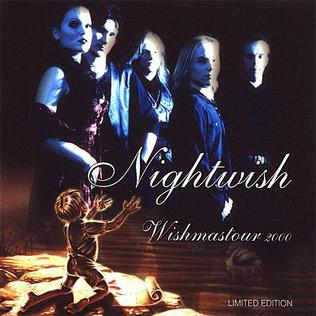
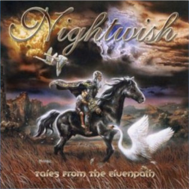
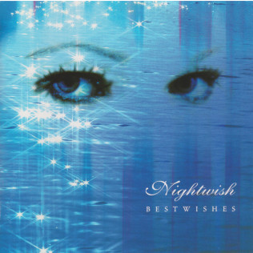
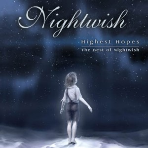
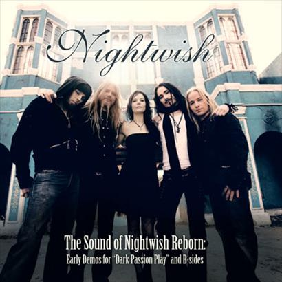
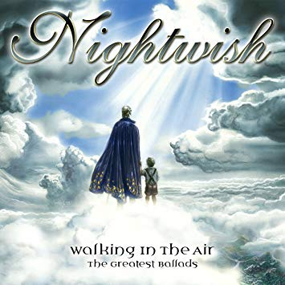
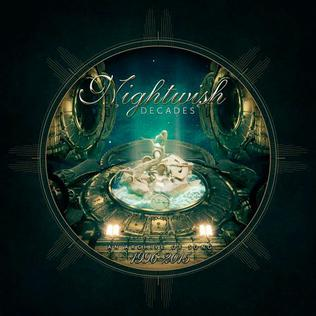

Compilation Albums
Wishmastour 2000
Track list:
1. "Wishmaster"
2. "Sleepwalker (heavy version)"
3. "Passion and the Opera (edit)"
4. "Nightquest"
5. "A Return to the Sea"
6. "Once Upon a Troubadour"

Tales from the Elvenpath
Track list:
1. "Wishmaster"2. "Sacrament of Wilderness"
3. "End of all Hope"
4. "Bless the Child"
5. "Sleeping Sun"
6. "She is my Sin"
7. "Walking in the Air"
8. "Stargazers"
9. "Over the Hills and Far Away"
10. "The Kinslayer"
11. "Dead Boy's Poem"
12. "Sleepwalker"
13. "Nightquest"
14. "Lagoon"
15. "The Wayfarer"
8. "Stargazers"
9. "Over the Hills and Far Away"
10. "The Kinslayer"
11. "Dead Boy's Poem"
12. "Sleepwalker"
13. "Nightquest"
14. "Lagoon"
15. "The Wayfarer"

Bestwishes
Track list:
1. „Stargazers“ - 4:272. „The Kinslayer“ - 3:58
3. „She Is My Sin“ - 4:45
4. „Ever Dream“ - 4:43
5. „Come Cover Me“ - 4:35
6. „Know Why The Nightingale Sings“ - 4:13
7. „Bless the Child“ - 6:12
8. „End Of All Hope“ - 3:54
9. „The Riddler“ - 5:15
10. „Sleepwalker (Original)“ - 2:56
11. „Crownless“ - 4:26
12. „Sacrament of Wilderness“ - 4:09
13. „Walking in the Air“ - 5:28
14. „Beauty And The Beast“ - 6:23
15. „Wishmaster“ - 4:23
16. „Over The Hills And Far Away“ - 5:00
17. „Sleeping Sun“ - 4:02
10. „Sleepwalker (Original)“ - 2:56
11. „Crownless“ - 4:26
12. „Sacrament of Wilderness“ - 4:09
13. „Walking in the Air“ - 5:28
14. „Beauty And The Beast“ - 6:23
15. „Wishmaster“ - 4:23
16. „Over The Hills And Far Away“ - 5:00
17. „Sleeping Sun“ - 4:02

Highest Hopes: The Best of Nightwish
Track list:
1. "Wish I Had an Angel" – 4:042."Stargazers" – 4:26
3."The Kinslayer" – 4:02
4."Ever Dream" – 4:44
5."Elvenpath" – 4:38
6."Bless the Child" – 6:12
7."Nemo" – 4:35
8."Sleeping Sun" (2005 version) – 4:24
9."Dead to the World" – 4:19
10."Over the Hills and Far Away" – 5:00
11."Deep Silent Complete" – 3:57
12."Sacrament of Wilderness" – 4:11
13."Walking in the Air" – 5:27
14."Wishmaster" – 4:24
15."Dead Boy's Poem" – 6:48
16."High Hopes (live Pink Floyd cover) – 7:20
8."Sleeping Sun" (2005 version) – 4:24
9."Dead to the World" – 4:19
10."Over the Hills and Far Away" – 5:00
11."Deep Silent Complete" – 3:57
12."Sacrament of Wilderness" – 4:11
13."Walking in the Air" – 5:27
14."Wishmaster" – 4:24
15."Dead Boy's Poem" – 6:48
16."High Hopes (live Pink Floyd cover) – 7:20

The Sound of Nightwish Reborn
Track list:
1. „Eva“ [pre-Anette Olzon demo version] - 4:182. „Reach“ [pre-Anette Olzon demo version] - 3:57
3. „While your lips are still red“ [b-side] - 4:19
4. „The escapist“ [b-side] - 4:59
5. „The poet and the pendulum“ - 13:45
6. „Bye bye beautiful“ [dj orkidea remix] - 12:07
7. „Meadows of heaven“ [orchestral version] - 7:13
8. „Amaranth“ [orchestral version] - 3:51
9. „The escapist“ [instrumental version] - 4:57
8. „Amaranth“ [orchestral version] - 3:51
9. „The escapist“ [instrumental version] - 4:57

Walking in the Air: The Greatest Ballads
Track list:
1. "Walking in the Air" 5:282. "Angels Fall First" 5:34
3. "Sleepwalker" 3:04
4. "Sleeping Sun" 4:01
5. "Dead Boy's Poem" 6:47
6. "Deep Silent Complete" 3:57
7. "Feel for You" 3:54
8. "The Phantom of the Opera" 4:09
9. "Ocean Soul" 4:14
10. "Lagoon" 3:46
11. "Swanheart" 4:44
12. "Two for Tragedy" 3:51
13. "A Return to the Sea" 5:46
14. "Away" 4:32
15. "Forever Yours" 3:51
8. "The Phantom of the Opera" 4:09
9. "Ocean Soul" 4:14
10. "Lagoon" 3:46
11. "Swanheart" 4:44
12. "Two for Tragedy" 3:51
13. "A Return to the Sea" 5:46
14. "Away" 4:32
15. "Forever Yours" 3:51

Decades
Track list:
CD1 - 1. "The Greatest Show on Earth" – 24:002. "Élan" – 4:48
3. "My Walden" – 4:38
4. "Storytime" – 5:22
5. "I Want My Tears Back" – 5:07
6. "Amaranth" – 3:51
7. "The Poet and the Pendulum" – 14:00
8. "Nemo" – 4:36
9. "Wish I Had an Angel" – 4:06
CD2 - 1. "Ghost Love Score" – 10:02
2. "Slaying the Dreamer" – 4:32
3. "End of All Hope" – 3:55
4. "10th Man Down" – 5:24
5. "The Kinslayer" – 3:59
6. "Dead Boy's Poem" – 6:47
7. "Gethsemane" – 5:22
8. "Devil & the Deep Dark Ocean" – 4:46
9. "Sacrament of Wilderness" – 4:12
10. "Sleeping Sun" – 4:01
11. "Elvenpath" – 4:40
12. "The Carpenter" – 5:58
13. "Nightwish" (Demo) – 5:54
CD2 - 1. "Ghost Love Score" – 10:02
2. "Slaying the Dreamer" – 4:32
3. "End of All Hope" – 3:55
4. "10th Man Down" – 5:24
5. "The Kinslayer" – 3:59
6. "Dead Boy's Poem" – 6:47
7. "Gethsemane" – 5:22
8. "Devil & the Deep Dark Ocean" – 4:46
9. "Sacrament of Wilderness" – 4:12
10. "Sleeping Sun" – 4:01
11. "Elvenpath" – 4:40
12. "The Carpenter" – 5:58
13. "Nightwish" (Demo) – 5:54
